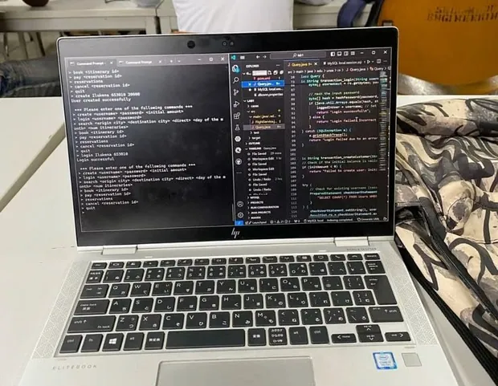
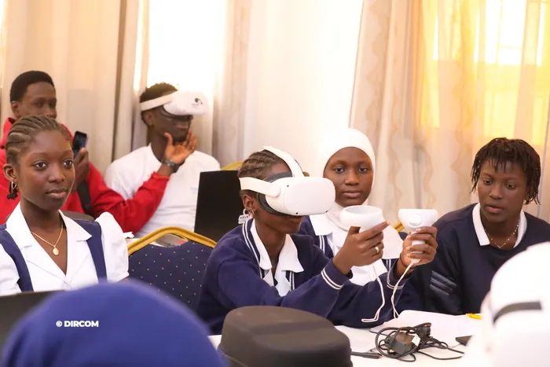
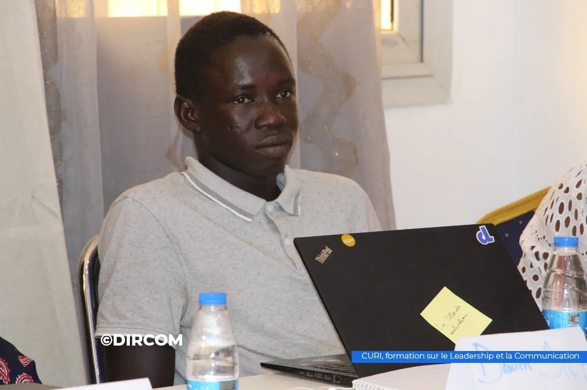
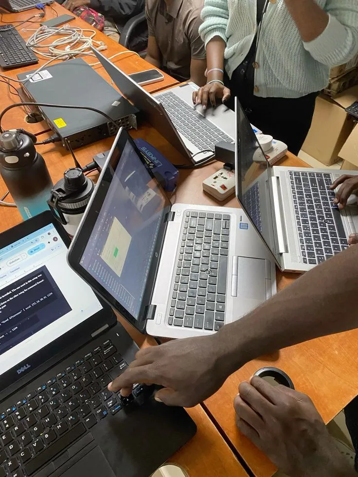

Bienvenue au CURI
Centre Universitaire de Recherche et de Formation aux Technologies de l'Internet
Pôle d'excellence académique de l'UCAD, le CURI forme en deux ans les spécialistes des technologies internet pour le développement numérique de l'Afrique.
Le CURI couvre tout le cycle des technologies de l'internet
Découvrir nos formations.

Développement web et mobile
Concevoir une application complète et la mettre en production, du serveur au téléphone.
Voir la formation
Technologie web et multimédia
Produire les contenus et les interfaces : graphisme, audiovisuel, publication en ligne.
Voir la formationE-commerce et marketing digital
Lancer et piloter une activité en ligne : stratégie, acquisition, contenus, résultats.
Voir la formation
À propos
Une institution au service du numérique africain
Le CURI est une entité académique de l'Université Cheikh Anta Diop de Dakar, dédiée à la formation aux technologies de l'internet, aux sciences du numérique et à la recherche appliquée.
En deux ans, nos étudiants acquièrent les compétences nécessaires pour répondre aux défis numériques du continent africain.
-
Mission
Former des spécialistes des technologies de l'internet.
-
Recherche
Des travaux de recherche appliquée liés aux enjeux du développement.
-
Partenariats
Une collaboration avec le secteur privé et les institutions internationales.
Un centre, deux missions
Former, et faire tourner le .sn.
Le CURI enseigne les technologies de l'Internet, et il en fait tourner une partie : la gestion du domaine national est confiée à l'UCAD depuis 1993 et portée par NIC Sénégal.
Cette double position donne aux étudiants un accès rare : ceux qui administrent le registre du pays enseignent dans les mêmes murs.
- Registre du domaine national .sn, avec NIC Sénégal
- Ateliers DNS et DNSSEC pour les professionnels de la région
- Partenariats avec l'ICANN, l'AFNIC et l'AFTLD
- Laboratoire de réalité virtuelle et augmentée sur le campus
À la une
Suivre nos actualités

Juin 2025
Portes ouvertes sur les technologies immersives
Le centre a accueilli des lycéens de trois établissements de Dakar pour une immersion dans la réalité virtuelle.
Lire l'article
Avril 2025
Formation au leadership et à la communication
Vingt doctorants de l'École Doctorale Mathématique Informatique formés au leadership et à l'entrepreneuriat.
Lire l'articleSeptembre 2024
Lancement du laboratoire des technologies immersives
Le centre lance son laboratoire de réalité étendue, en collaboration avec l'institut nigérian Imisi3D.
Lire l'articleAvril 2024
Atelier SenAgro
L'intelligence artificielle et la science des données au service de l'agriculture, avec Sorbonne Université et le CNRS.
Lire l'articleNovembre 2021
Hackathon du Parc de Technologies Numériques
Un week-end de travail collaboratif organisé par le CURI avec le PTN et Wutiko, suivi d'un concours de pitch.
Lire l'article
Vie du centre
Une année au CURI
Du premier cours au projet de fin d'études, le déroulé est le même pour les trois spécialités.
-
Cours et travaux pratiques
Des séances en salle, suivies d'exercices sur machine.
-
Encadrement pédagogique
Un suivi rapproché par les enseignants, en petit groupe.
-
Projets de semestre
Un travail en équipe rendu et soutenu à chaque semestre.
-
Projet de fin d'études
Le travail qui clôt le cursus et sert de première référence.
Ils sont passés par le centre
Ce que disent nos étudiants
Le CURI m'a donné les bases solides pour lancer ma carrière. En deux ans, j'ai acquis des compétences pratiques qui m'ont permis d'intégrer directement une entreprise tech à Dakar.
Grâce à la filière Marketing Digital du CURI, j'ai pu créer ma propre boutique en ligne. Le réseau Alumni m'a aussi beaucoup aidé dans mes débuts.
Les cours d'infographie et d'UX Design au CURI m'ont permis de devenir freelance. Je travaille maintenant avec des clients en France et au Canada.
Gouvernance de l'internet
Nos partenaires
Le centre travaille avec les organisations qui administrent les noms de domaine en Afrique et dans le monde.
Ces organisations figurent sur les supports des ateliers DNS et DNSSEC du centre. La liste complète des partenaires reste à compléter avec la direction.